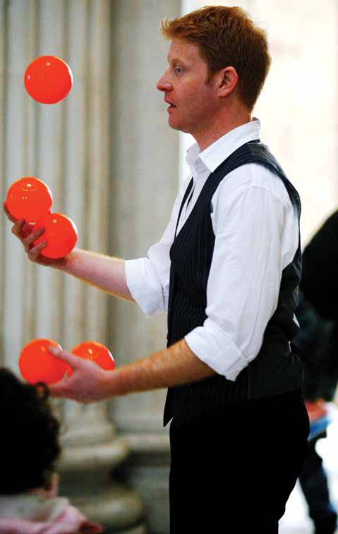
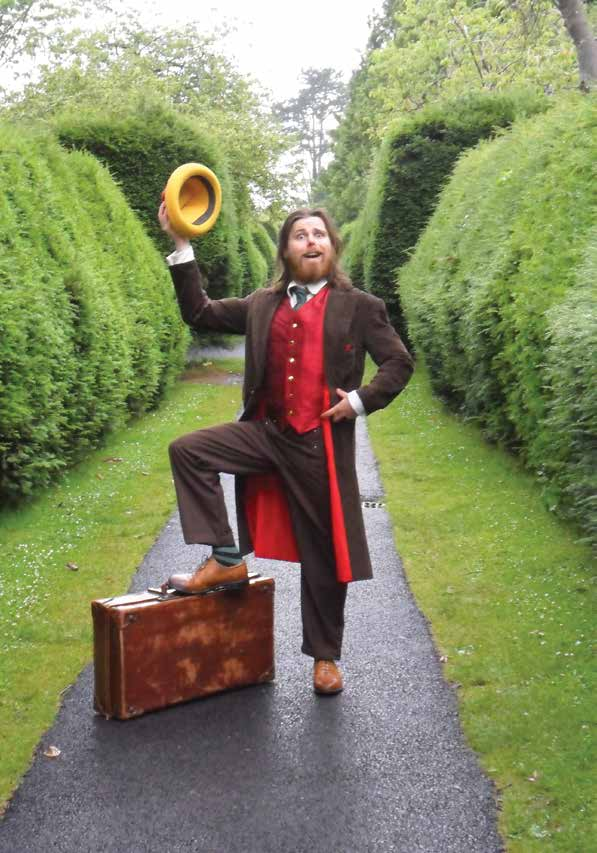
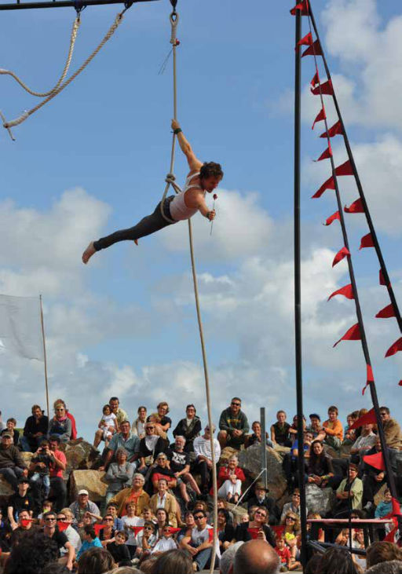

Roll up! Roll up!

Family Fun on Narrow West St
ROLL UP ROLL UP. LEAVE THE DRUDGERY BEHIND AND RUN AWAY TO THE CIRCUS FOR THE AFTERNOON. Featuring the delightful antics of Marcel So What and the wit and skill of The Journeyman Juggler for your entertainment we present: Sir Edwin Longbottom & Star Man...the legend of Kenneth Fall. The Journeyman Juggler at 1.30pm The Journeyman Juggler will amaze you with his wit, his skill and what can only be described as the most amazing display of incredible skillful wit ever....and he juggles too.
Circus Skills Workshop and presentation every half hour from 1.30pm Circus Skills Workshop: Under the watchful eye of experts you get to try your hand at juggling, balancing, and plate spinning. (limited to 6 participants per session so come early to sign up).
Performances every 45 mins from 1.30pm to 5.00pm.
Sir Edwin Longbottom

Roll up, roll up, step right up and receive a warm welcome into the world of high brow entertainment. Ladies and gentlemen, boys and girls, witness the antics of one charming, charismatic buffoon... Sir Edwin Longbottom comes direct from the world of vaudeville with his world famous football act. Dazzling dexterity is displayed as four footballs are bounced and balanced around his body. There's just one problem, Edwin has a stage to set except he never trained for this. In his day, there was always somebody else to do it. Nimble versus clumsy; charismatic athlete versus clownish buffoon. You never know which side emerges on top with Edwin around.
Kenneth Fall , Star Man : The Circus Years

For years man has looked tothe heavens for inspiration and guidance. But now the heavens have come to them. Star Man, a heavenly mix of circus, comedy and cardboard. Ken was raised in the grubby Dublin suburb town of Balbriggan. He entered the world of entertainment at a very early age. By the time he was 13, he was watching at least 7 hours of television a night. After travelling through Europe with his juggling equipment he returned to Ireland and set up Tumble Circus in 1998. Tumble Circus has grown into the Ireland's most successful circus street theatre company. As well as performing, Ken writes and directs most of the company's work. Star Man is Ken's first solo show.
Saturday 3 May
Venue: Outside Abbey Shopping Centre, Narrow West St
Times: Circus Skills: Every 30mins from 1:30pm to 5:00pm
Circus Performance: Every 45mins from 1:30pm to 5:00pm
Sir Edwin Longbottom : 2:15 & 3:45pm
Kenneth Fall , Star Man : 3:00 & 4:00pm
Tickets: Free, Drop In, Roll Up